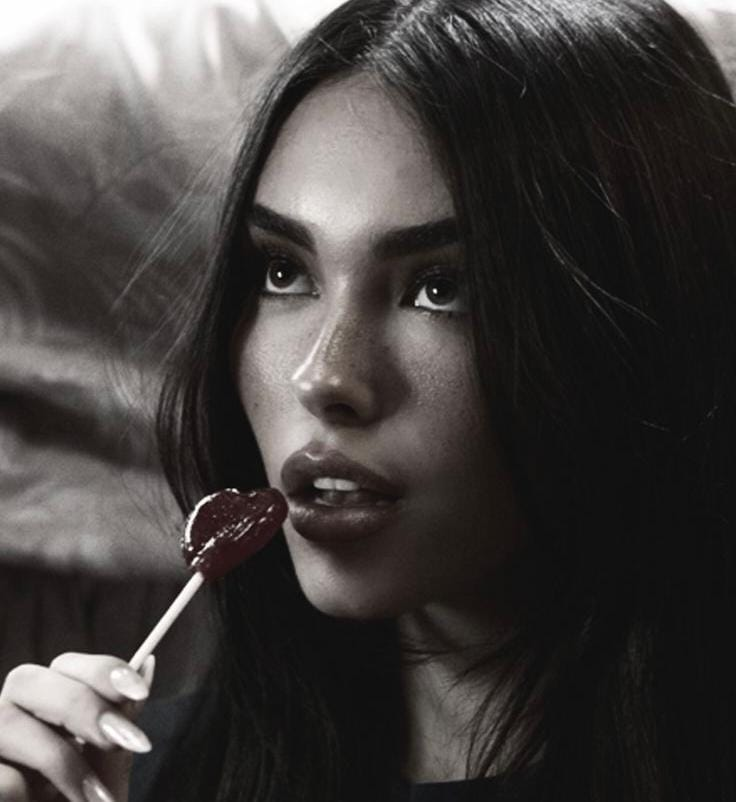

Madison Elle Beer nasceu em 5 de março de 1999, em Jericho, Nova York, Estados Unidos. Ela é uma cantora, compositora e influenciadora digital norte-americana, conhecida por sua voz marcante e estilo que mistura pop, R&B e soul.
Madison ganhou notoriedade ainda muito jovem, em 2012, quando o cantor Justin Bieber compartilhou um vídeo dela cantando no YouTube. A partir disso, sua carreira começou a crescer rapidamente, chamando a atenção da indústria musical.
Em 2013, lançou seu single de estreia, “Melodies”, iniciando oficialmente sua trajetória profissional. Com o tempo, Madison passou a desenvolver uma identidade artística mais madura, abordando temas como autoestima, relacionamentos, saúde mental e crescimento pessoal.
Seu EP “As She Pleases” (2018) marcou uma virada em sua carreira, mostrando maior controle criativo e uma sonoridade mais pessoal. Já em 2021, ela lançou seu primeiro álbum de estúdio, “Life Support”, que recebeu elogios da crítica por sua honestidade emocional e produção sofisticada.
Além da música, Madison Beer também é uma figura forte nas redes sociais, influenciando moda, beleza e comportamento, e costuma falar abertamente sobre ansiedade, depressão e os desafios da fama, o que a aproximou ainda mais de seus fãs.
Hoje, Madison Beer é reconhecida como uma artista versátil, autêntica e em constante evolução, consolidando seu espaço na música pop contemporânea.

Hoje, Madison Beer é reconhecida como uma artista versátil, autêntica e em constante evolução, consolidando seu espaço na música pop contemporânea.